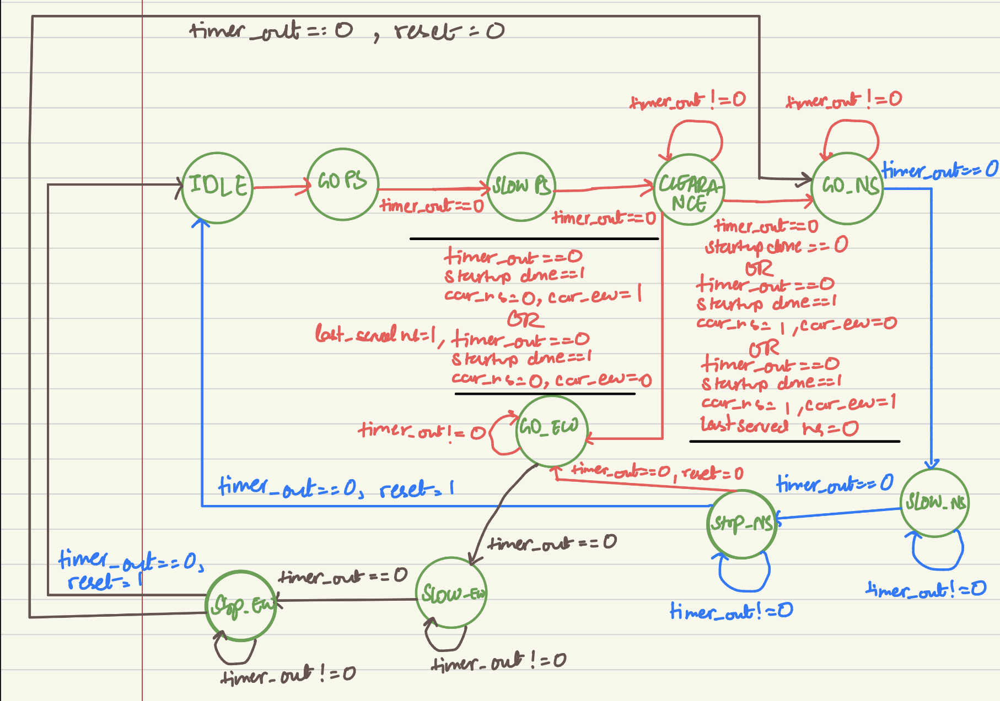
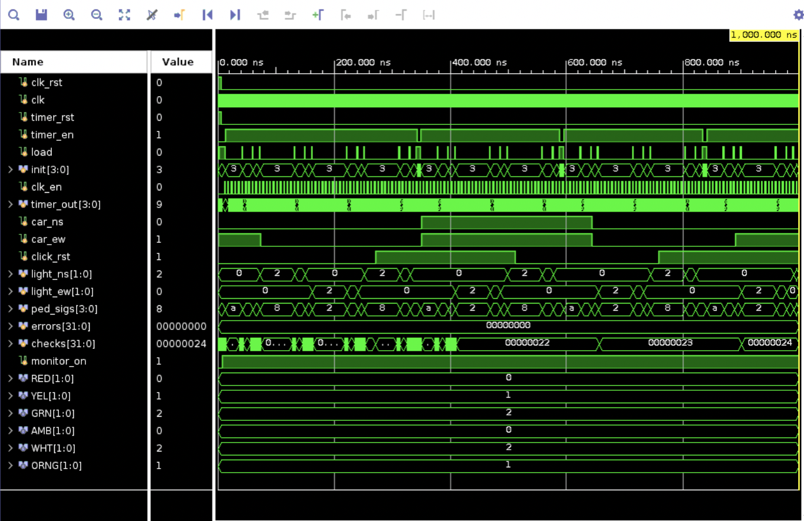

← All projects
Programming Hardware: FPGA Traffic Light Controller
CS 1410 · 2026SystemVerilogVivado
- What
-
A traffic light controller for an intersection with 2 traffic lights (east-west and north-south), written in SystemVerilog and run on an FPGA board.
- How
- A 10-state FSM with one state per phase.
- Each state loads a timer and stays in that state until the timer is up. State only updates on a divided slow clock enable, so the lights change slower for human clocks.
- The FSM takes into account if a car is waiting on the road to decide which direction should open next.
- Result
- Self-checking testbench for different cases to ensure code is free of errors.
- The system is visulaized in a GUI that shows which loghts are green, orange or red at any given time.
The design
The controller is a Moore-style machine so every output (the two traffic lights and pedestrian signals) depends only on the current state. Each state also has a timer value that is counting down to indicate when a state transition takes place. The timer counts down on the slow clock enable.
After reset, the machine runs a startup sequence with both roads held at red while the pedestrian signals cycle white, orange and red. It then enters a clearance state. Once startup is done, traffic light green alternates between north-south road and east-west road. Each green phase is followed by a yellow phase and then a red stop phase, so the two directions take turns. Priority is given to the direction where a car is waiting.
State outputs
Car lights are red, yellow or green. Pedestrian signals are white, orange or amber. Timer values are in slow-clock ticks.
| State | Car NS | Car EW | Ped NS | Ped EW | Timer |
|---|
| IDLE | Red | Red | Amber | Amber | 0 |
| GO_PS | Red | Red | White | White | 5 |
| SLOW_PS | Red | Red | Orange | Orange | 3 |
| CLEARANCE | Red | Red | Amber | Amber | 2 |
| GO_NS | Green | Red | Amber | White | 10 |
| SLOW_NS | Yellow | Red | Amber | Orange | 3 |
| STOP_NS | Red | Red | Amber | Amber | 2 |
| GO_EW | Red | Green | White | Amber | 10 |
| SLOW_EW | Red | Yellow | Orange | Amber | 3 |
| STOP_EW | Red | Red | Amber | Amber | 2 |
State transitions
| From | To | When |
|---|
| IDLE | GO_PS | Immediately after reset |
| GO_PS | SLOW_PS | Timer expires |
| SLOW_PS | CLEARANCE | Timer expires |
| CLEARANCE | GO_NS or GO_EW | Timer expires. First time through, NS goes first. Afterward the car sensors decide, and when both or neither road has a car it alternates using the last direction served |
| GO_NS | SLOW_NS | Timer expires |
| SLOW_NS | STOP_NS | Timer expires |
| STOP_NS | GO_EW | Timer expires and reset is low |
| STOP_NS | IDLE | Timer expires and reset is high |
| GO_EW | SLOW_EW | Timer expires |
| SLOW_EW | STOP_EW | Timer expires |
| STOP_EW | GO_NS | Timer expires and reset is low |
| STOP_EW | IDLE | Timer expires and reset is high |

State diagram, drawn before writing the SystemVerilog
Verification
A self-checking testbench drives the clock, car sensors and reset, then compares the car and pedestrian outputs against the expected values for each state. It keeps two counters: how many checks have run and how many failed. In the capture below, the error counter stays at 0 while the check counter climbs 36 checks which was enough for this project.
The test plan covered startup, alternation, a single request, both and neither sensors, reset during north-south and during east-west, and timer limits

Vivado behavioral simulation: errors stay at 0 as checks accumulate
Visualization
To see the controller behave like a real intersection, I used a GUI that shows the NS and EW lights, both pedestrian signals, the current timer value, and toggles for CAR NS, CAR EW and reset so we can see how the program responds to different conditions.
Intersection GUI